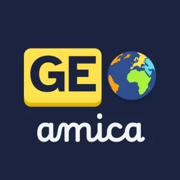
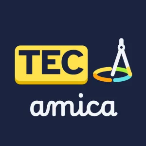

Leggo e Scrivo
Sillabe, ricalco e pregrafismo
Per chi fa ancora fatica: si fotografa la pagina del libro e la si legge una sillaba alla volta, o la si ascolta tutta. Poi copia e dettato con le parole del testo.
Presto anche su Google Play
SCUOLA SECONDARIA DI PRIMO GRADO
Cinque app, una per materia: per chi fa ancora fatica a leggere e a scrivere, per le espressioni e i conti in colonna, per la geografia su carte vere, per la musica nei percorsi a indirizzo musicale e per la tecnologia, con il disegno tecnico un passo alla volta. Funzionano senza Internet e senza account.




Sillabe, ricalco e pregrafismo
Per chi fa ancora fatica: si fotografa la pagina del libro e la si legge una sillaba alla volta, o la si ascolta tutta. Poi copia e dettato con le parole del testo.
Presto anche su Google Play
Conti in colonna passo passo
Espressioni con parentesi tonde, quadre e graffe e con le potenze, un'operazione per riga e nell'ordine giusto. I passaggi con i numeri grandi si fanno in colonna.
Esplora, trova e scrivi luoghi
L'Italia, l'Europa e il mondo su carte vere, fino alla carta muta, e 90 lezioni per i tre anni delle medie, con la lezione di oggi sulla LIM e il gioco con la classe.
Lezioni, ritmo e dettati
Teoria e lettura della musica nei percorsi a indirizzo musicale: lezioni già pronte, solfeggio, dettati e il gioco con tutta la classe.
Presto anche su Google Play
Disegno, materiali e coding
Tecnologia alle medie, sul programma delle Nuove Indicazioni nazionali: disegno tecnico, materiali, rifiuti come risorsa, computer e Internet, produzione ed energia, in 90 lezioni per i tre anni, ognuna in tre versioni.
Presto anche su Google Play
Lavori sul sostegno? Ecco che cosa offre ogni app a chi lavora sul sostegno: gli aiuti alunno per alunno, il materiale della classe, i progressi per il PEI.